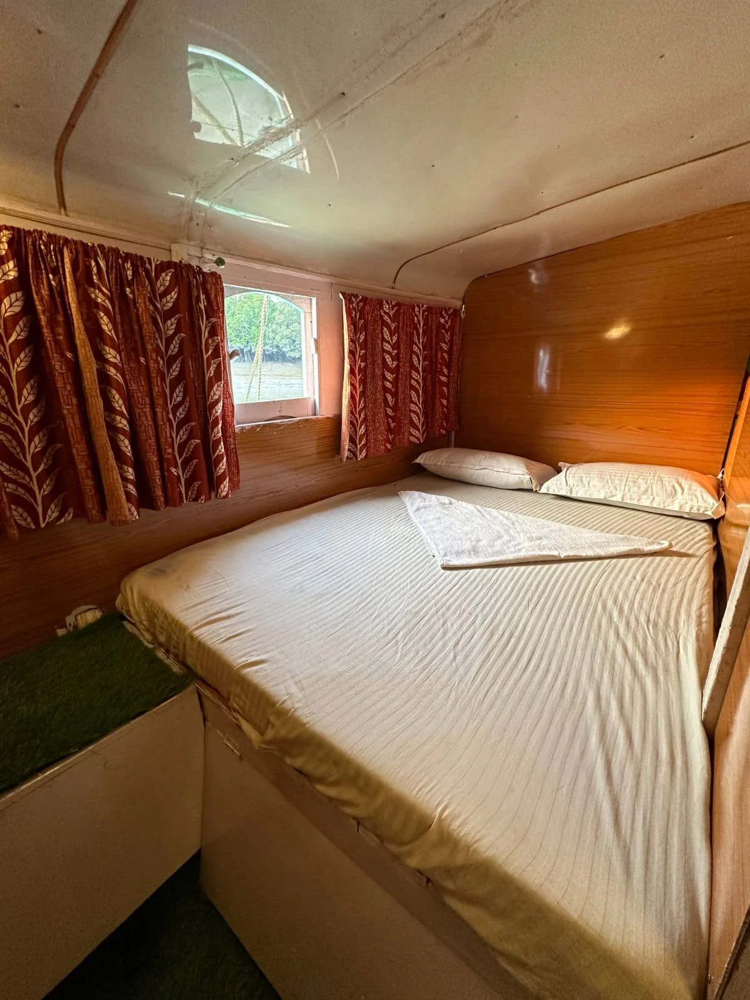
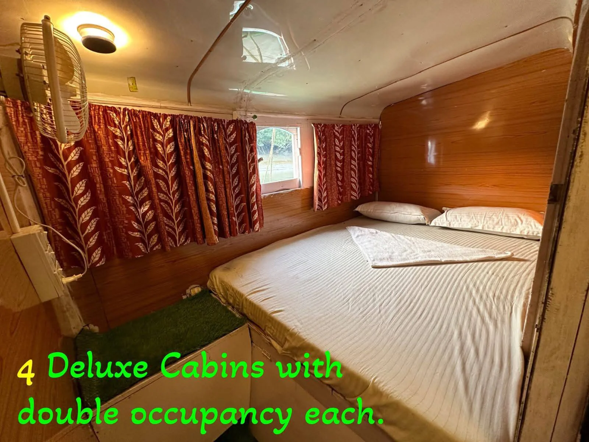
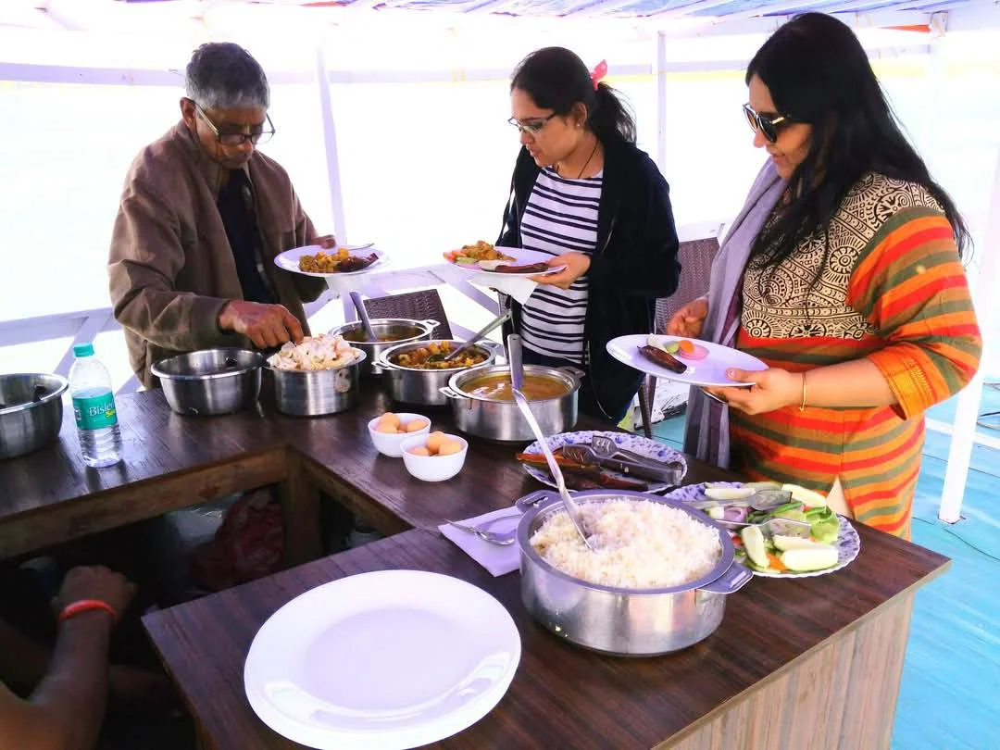
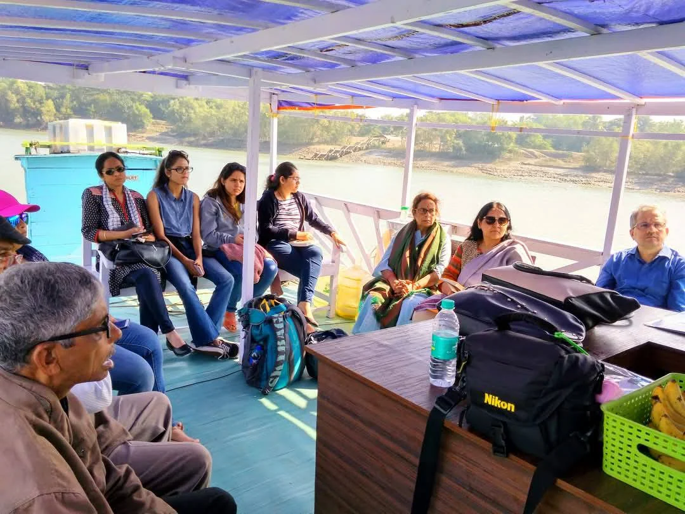
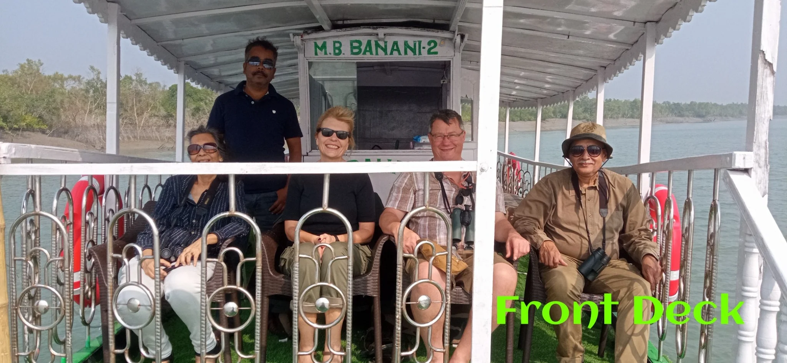
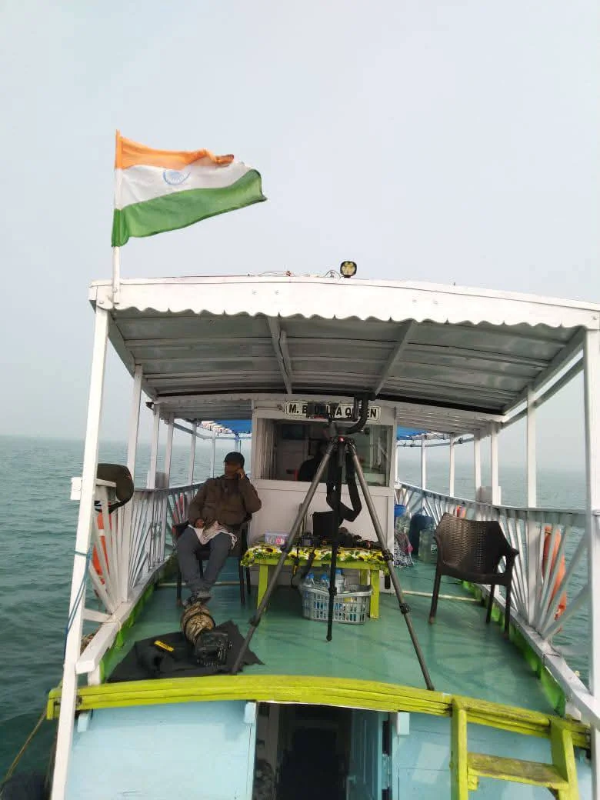
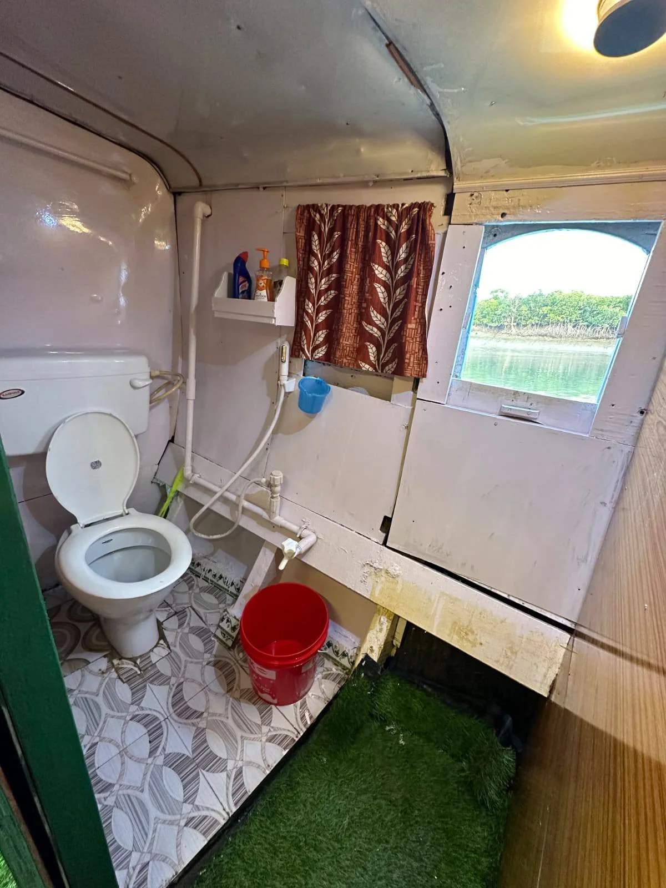
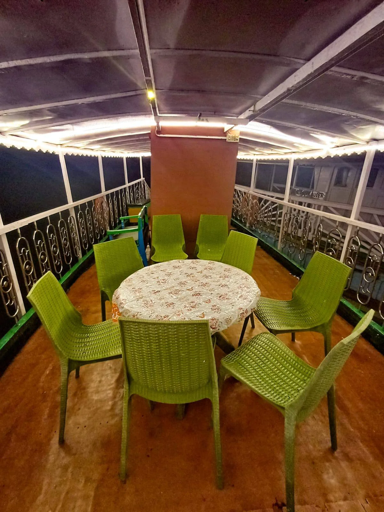
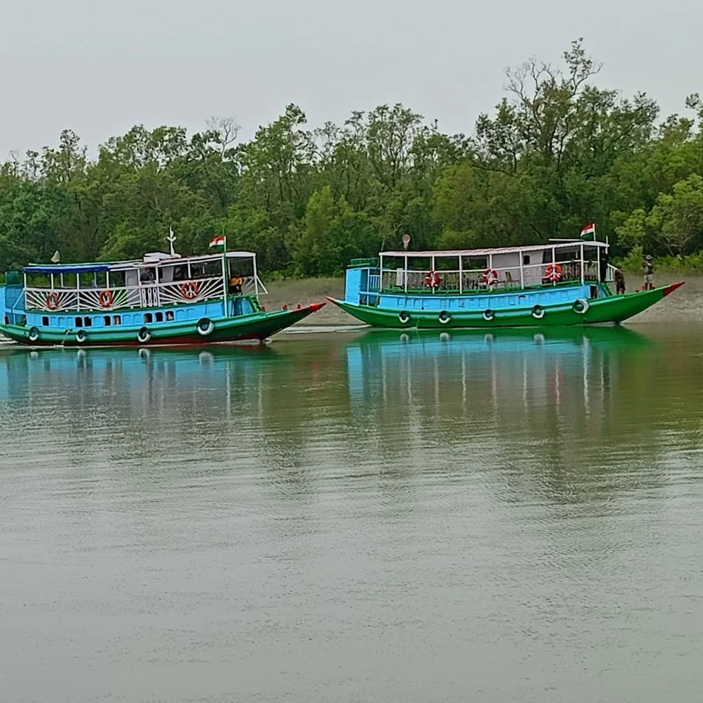
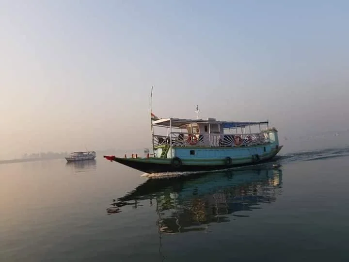

4 Double Beds
Four cabin/open-bed sleeping spaces with double beds. Comfortable overnight accommodation for up to 8 guests, subject to the booking configuration and applicable operational limits.
This is not a luxury cruise. These are wildlife-ready houseboats designed as floating bases for explorers, naturalists and photographers spending real time in the mangrove wilderness.
Beyond photographs. See DELTA QUEEN on the river and get a glimpse of the real Sundarbans boat experience.
Watch on YouTube
The DELTA QUEEN houseboats offer an overnight setup for guests who want to spend more of their journey on the waterways. The open, practical layout keeps you close to the landscape while providing the essentials for a comfortable stay.
Mornings can begin with mist over the mangroves. Long river hours bring changing light, quiet observation and the possibility of unexpected wildlife encounters. The boat is part of the journey, not simply a ride between destinations.
The houseboat has four cozy double-occupancy sleeping spaces for overnight guests. It is an open, nature-connected setup made for spending time on the river.
Four cabin/open-bed sleeping spaces with double beds. Comfortable overnight accommodation for up to 8 guests, subject to the booking configuration and applicable operational limits.
Fans for ventilation, with charging points for mobile phones, cameras, laptops and other essential devices.
An open layout that brings the sights, sounds and changing atmosphere of the mangrove waterways closer.
Practical facilities support a longer river-based stay, with a dedicated crew area and guest essentials aboard.
One fully functional onboard kitchen for meal preparation during the expedition.
One western-style washroom inside the boat.
A separate staff washroom located at the rear of the houseboat.
The spacious upper deck is the boat’s open viewing space, designed for slow observation, wildlife watching and photography in changing river light.
Space to watch the waterways and mangrove edges for extended periods.
Bean bags available to help provide stability and comfort during observation and photography.
A practical setup for photographers who need to settle in and wait patiently for the scene to unfold.
Cabins, decks, river views and the everyday spaces that make the houseboat your floating base.









Use the houseboat as part of a wildlife expedition, photography journey or a customised Sundarbans itinerary. Routes, overnight arrangements and operational plans are discussed and confirmed according to Forest Department permissions, tides, weather and local conditions.
This is a practical wildlife-oriented houseboat, not a luxury hotel or cruise ship. Itineraries, routes and wildlife viewing opportunities depend on tide, weather, permissions and operational conditions. Confirm cabin configuration, inclusions and facilities at enquiry stage.